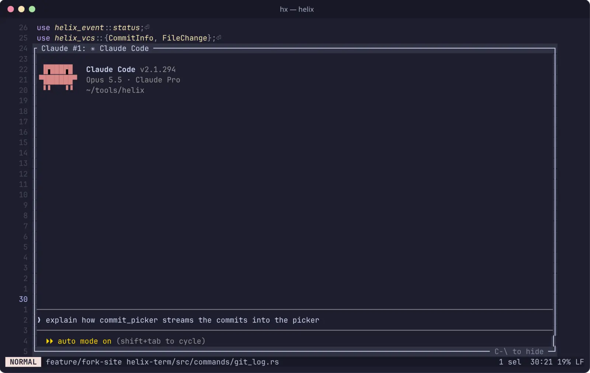

Claude Code popup
Runs Claude Code in a terminal embedded in a popup, with the current file, line and selection as context. Sessions keep running in the background when the popup is hidden.
space itoggle the popup
space Ipick a session
:claude …new session with a prompt
